CASO DE ESTUDIO UX/UI
Personal Pay — Argentina
Rediseño del flujo de gestión de contactos y transferencias para mejorar la experiencia de usuario y reducir la fricción en operaciones frecuentes.
Rol
UX Lead
Duración
3 meses
Año
2025
RESUMEN
En Personal Pay, cerca de 3 de cada 4 transacciones pasan por la agenda de transferencias. Sin embargo, la experiencia existente presentaba fricciones recurrentes que afectaban la satisfacción del usuario y generaban costos operativos en soporte.
Diseñar una experiencia de agenda que permita encontrar y seleccionar rápidamente destinatarios frecuentes, reducir errores en transferencias, y elevar la satisfacción del usuario.
EL PROBLEMA
Dificultad para encontrar destinatarios frecuentes
Gestión poco clara de contactos
Poca utilidad de 'Últimas transferencias' como atajo
Altos tiempos de interacción para completar transferencias recurrentes
DISEÑO ANTERIOR
El diseño original no priorizaba visualmente los contactos frecuentes y presentaba una jerarquía poco clara entre las diferentes opciones de transferencia.
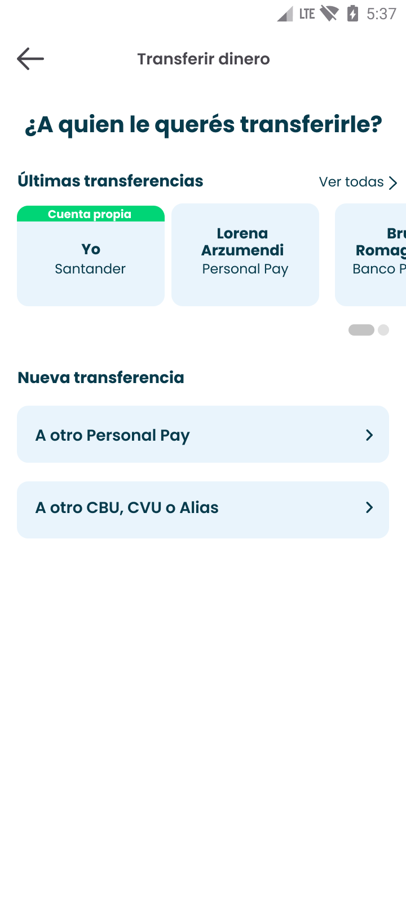
Pantalla principal
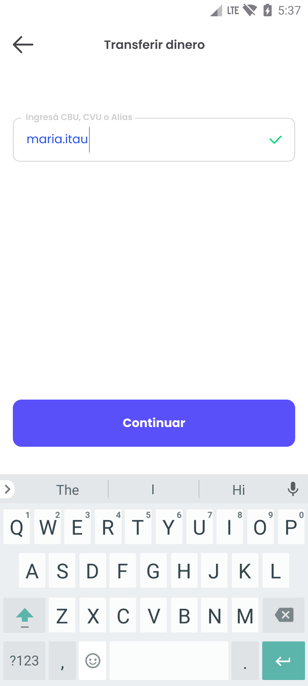
Ingreso de datos
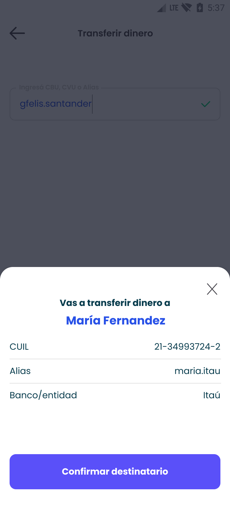
Confirmación
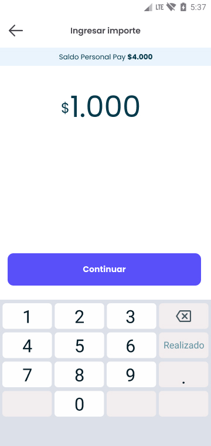
Ingresar importe
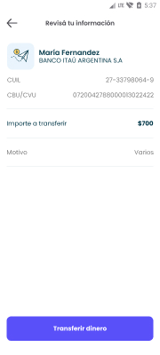
Revisión de información
Transferencia exitosa
PROCESO
3 meses de trabajo colaborativo con los equipos de Marketing, Customer Experience, Customer Service y Producto para garantizar una solución integral y alineada con las necesidades del negocio y los usuarios.
HALLAZGOS
"No encuentro a mis contactos frecuentes rápidamente."
"No sé si puedo borrar esto sin perder algo importante."
"Las últimas transferencias no se sienten como atajo."
Definición ideal
"La forma más rápida y confiable de repetir transferencias que ya tengo que hacer"
— Usuarios de Personal Pay
LA SOLUCIÓN
Con foco en accesos directos, control y claridad
Se priorizó visualmente la sección de favoritos. Los contactos más usados aparecen al principio, reduciendo el esfuerzo cognitivo para encontrar destinatarios.
Se implementó una UI clara para alta / baja / modificación. Confirmaciones y microcopy orientadas a generar confianza, reduciendo el miedo a eliminar contactos.
Se rediseñó la vista para que replicar una transferencia sea fácil y seguro. Se añadieron labels descriptivos para que la identidad del destinatario esté siempre clara.
Visibilidad directa y control de próximas transferencias con acceso para editar o cancelar.
Insight clave
El foco en UX Writing fue fundamental: mensajes simples, amigables y seguros que generan confianza en cada punto de contacto.
WORKFLOW COMPLETO
Mapa completo del flujo de navegación optimizado, desde la entrada principal hasta la confirmación de transferencias.
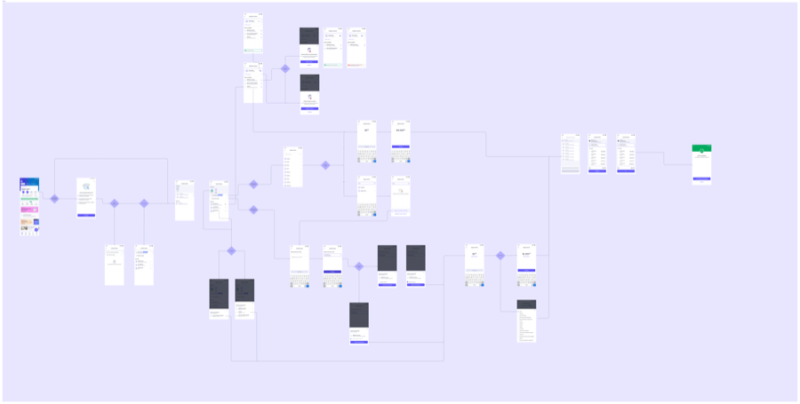
El workflow incluye todos los puntos de decisión, estados y pantallas optimizadas para reducir fricción en el proceso de transferencia.
DISEÑO FINAL
El rediseño prioriza el acceso rápido a favoritos, gestión clara de contactos y confirmaciones que generan confianza en cada interacción.
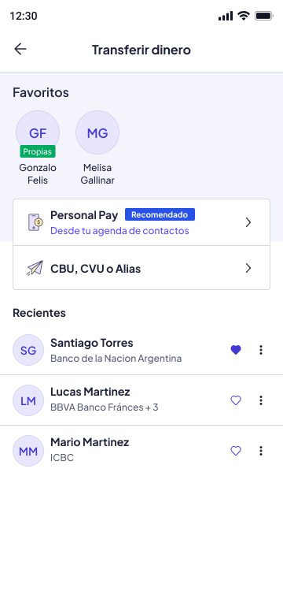
Agenda principal
Favoritos y recientes optimizados
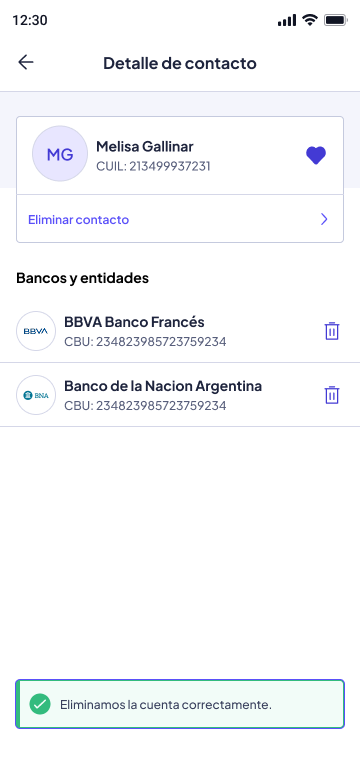
Detalle de contacto
Gestión clara de cuentas asociadas
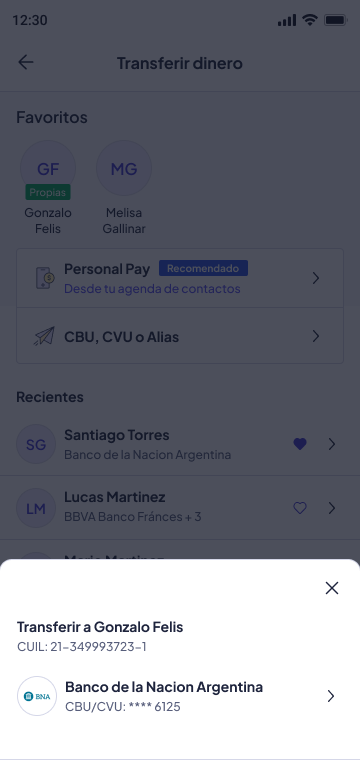
Backdrop
Acceso rápido a transferir
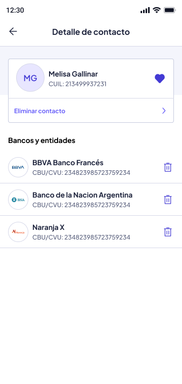
Múltiples cuentas
Soporte para varios bancos
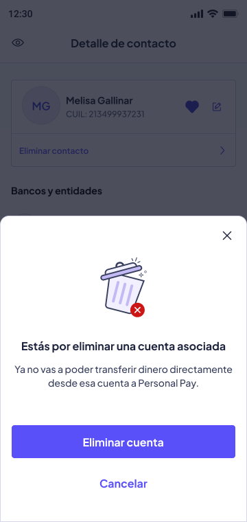
Confirmación
UX Writing orientado a seguridad
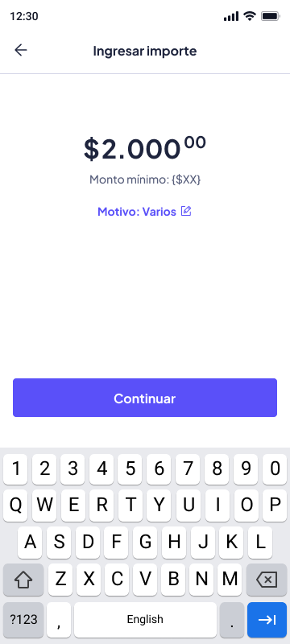
Ingreso de importe
Interfaz clara y accesible
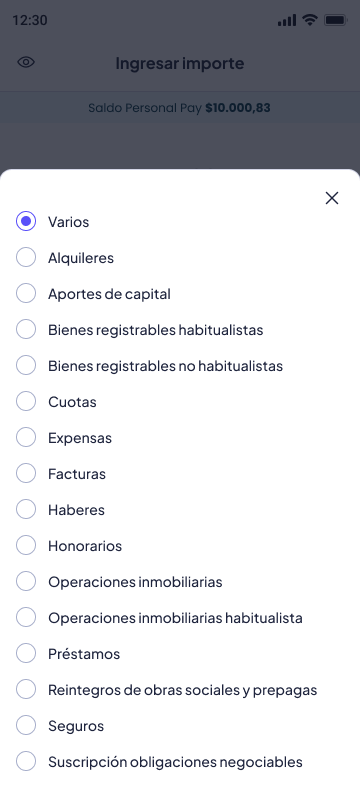
Selección de motivo
Categorización de transferencias
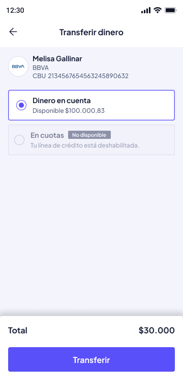
Transferir dinero
Selección de cuenta de origen
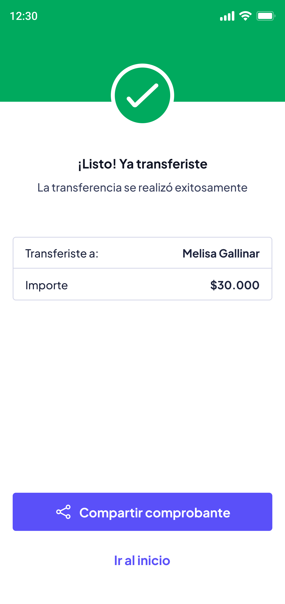
Transferencia exitosa
Feedback positivo y claro
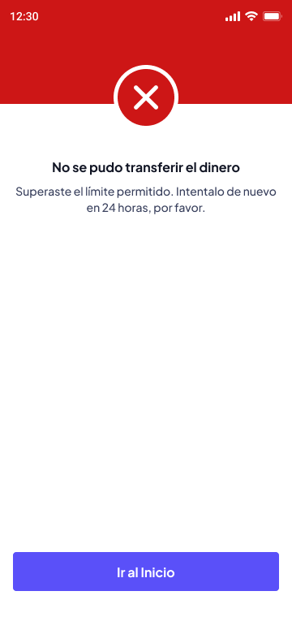
Error de transferencia
Mensajes de error informativos
VIDEO PRODUCTO
Navegación fluida por el home principal de Personal Pay, mostrando cómo la agenda de transferencias se integra naturalmente en el ecosistema de la app.
Home principal con acceso directo a funciones clave, incluyendo transferencias.
RESULTADOS
"Ahora encontrar a mis contactos nunca fue tan fácil, ¡mucho mejor!"
"La nueva agenda me ahorra tiempo, ya no me confundo al transferir."
"Gestionar contactos es simple y sin miedo a borrar algo por error."
* Basado en tendencias del dashboard de feedback del producto
IMPACTO EN NEGOCIO
| Dimensión | Resultado |
|---|---|
| Soporte / Call Center | Menos volumen de consultas |
| Satisfacción del usuario | Mayor retención y calificación |
| Tiempos de operación | Más eficientes en transferencias |
| Confianza funcional | Usuarios sienten control y claridad |
APRENDIZAJES
El microcopy no es decoración. Mensajes simples y claros generan seguridad en cada acción del usuario.
Enfocarse en lo que realmente mueve la aguja facilita decisiones claras sobre el roadmap.
Elegir qué desarrollar ahora vs después fue una decisión clave para el éxito del proyecto.
PRÓXIMOS PASOS
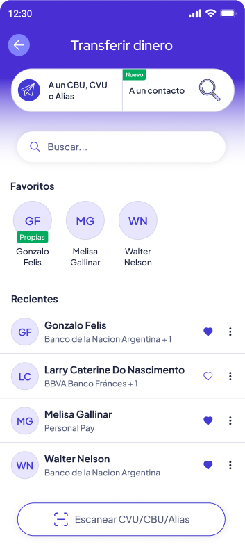
Nuevo buscador que permite copiar o escanear un alias CVU para agilizar transferencias
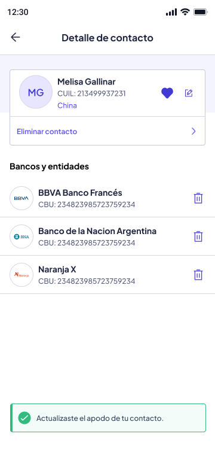
Agregar apodos a los contactos para que la búsqueda sea más eficiente y personalizada
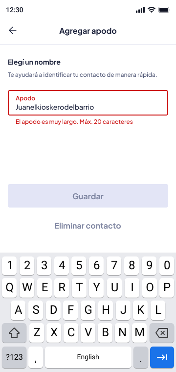
Sistema de validación para nombres de apodos con límite de caracteres y feedback claro
Experimentamos con inteligencia artificial para desarrollar un sistema de ilustraciones que acompañe las experiencias clave de la aplicación.